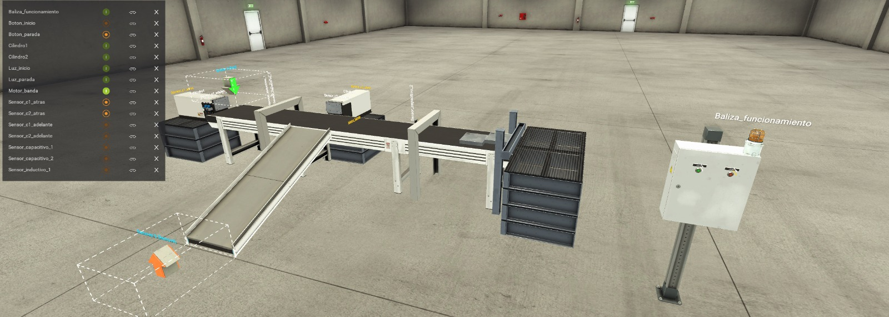
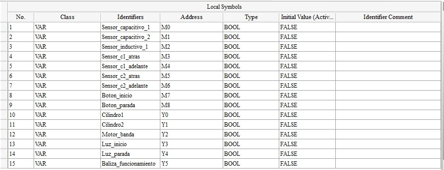

1. Objetivo de la actividad
Diseñar, programar y validar en un PLC Delta SX2 el control de una banda transportadora capaz de alimentar piezas mediante un cilindro neumático, identificar materiales metálicos mediante sensores inductivos y capacitivos, rechazar las piezas metálicas mediante un segundo cilindro y detener el transporte de las piezas no metálicas cuando alcancen el final del proceso.
2. Archivos entregados
Todos los archivos de esta actividad deben mantenerse en la misma carpeta que este archivo index.html. Los enlaces siguientes utilizan rutas relativas, por lo que no requieren modificar el código si se conservan los nombres indicados.
Banda_clasificacion.factoryio
Configuración KEPServerEXBanda_clasificacion_KEPServer.opf
Proyecto base ISPSoftBanda_clasificacion_ISPSoft.dvp
| Archivo | Uso en la actividad |
|---|---|
| Proyecto Factory I/O | Contiene la escena del proceso: banda, cilindros, sensores, panel de mando y piezas. |
| Configuración KEPServerEX | Permite comunicar Factory I/O con el PLC Delta SX2 mediante las variables configuradas. |
| Proyecto base ISPSoft | Contiene la configuración y los símbolos obligatorios. No contiene la solución Ladder. |
| Guía de laboratorio | Define el funcionamiento requerido, las pruebas y la evidencia que debe entregar el estudiante. |
3. Vista general del proceso
La instalación está compuesta por una banda transportadora, dos cilindros neumáticos de simple efecto, dos portales de detección, sensores de posición de cilindro, botonera de mando y señalización.

1_proceso.jpg en la misma carpeta que index.html.'">1_proceso.jpg.La pieza cae en la zona inicial. El cilindro 1 la empuja hacia la cinta y se pone en marcha el motor. La pieza atraviesa un primer portal equipado con un sensor capacitivo y un sensor inductivo. Si se identifica como metálica, debe ser rechazada mediante el cilindro 2. Si no es metálica, continúa hasta el segundo portal, donde un sensor capacitivo detecta su llegada y provoca la detención de la banda.
4. Video de referencia
Observa el video antes de programar. Debes identificar la secuencia real de movimientos, el instante de actuación de cada sensor y el comportamiento esperado de los cilindros y de la banda.
video_proceso.mp4, ubicado en la misma carpeta que index.html.video_proceso.mp4.5. Mapeo de entradas y salidas
Antes de comenzar el programa, revisa el mapeo de símbolos. Estos identificadores se deben utilizar exactamente con los nombres y direcciones indicados.

2_mapeo.jpg en la misma carpeta que index.html.'">2_mapeo.jpg.| Símbolo | Dirección | Tipo | Función en el proceso |
|---|---|---|---|
Sensor_capacitivo_1 | M0 | BOOL | Detecta presencia de pieza en el primer portal. |
Sensor_capacitivo_2 | M1 | BOOL | Detecta la llegada de la pieza al segundo portal/final de la banda. |
Sensor_inductivo_1 | M2 | BOOL | Identifica una pieza metálica en el primer portal. |
Sensor_c1_atras | M3 | BOOL | Confirma que el cilindro 1 se encuentra retraído. |
Sensor_c1_adelante | M4 | BOOL | Confirma que el cilindro 1 se encuentra extendido. |
Sensor_c2_atras | M5 | BOOL | Confirma que el cilindro 2 se encuentra retraído. |
Sensor_c2_adelante | M6 | BOOL | Confirma que el cilindro 2 se encuentra extendido. |
Boton_inicio | M7 | BOOL | Orden de puesta en marcha del sistema. |
Boton_parada | M8 | BOOL | Orden de parada del sistema. |
Cilindro1 | Y0 | BOOL | Accionamiento del cilindro encargado de introducir la pieza a la banda. |
Cilindro2 | Y1 | BOOL | Accionamiento del cilindro encargado del rechazo de piezas metálicas. |
Motor_banda | Y2 | BOOL | Motor de la cinta transportadora. |
Luz_inicio | Y3 | BOOL | Indicador luminoso de sistema en marcha. |
Luz_parada | Y4 | BOOL | Indicador luminoso de sistema detenido. |
Baliza_funcionamiento | Y5 | BOOL | Baliza de señalización durante el funcionamiento. |
6. Secuencia esperada del proceso
Estado inicial
La banda permanece detenida y los actuadores se encuentran en una condición segura. El sistema espera una orden de inicio.
Puesta en marcha
Al presionar Boton_inicio, el sistema debe quedar habilitado para funcionar y mantener esa condición aunque el pulsador sea liberado. La señalización debe indicar el estado de marcha.
Alimentación de la pieza
El cilindro 1 introduce una pieza a la cinta. El programa debe considerar Sensor_c1_atras y Sensor_c1_adelante para comprobar su movimiento y evitar una nueva alimentación antes de completar la anterior.
Transporte
Una vez incorporada la pieza, Motor_banda debe activarse para trasladarla hacia los portales de detección.
Identificación en el primer portal
Sensor_capacitivo_1 informa presencia de pieza y Sensor_inductivo_1 permite determinar si corresponde a material metálico.
Ruta de pieza metálica
Si la pieza es metálica, debe continuar hasta la zona de rechazo. En el momento adecuado se acciona Cilindro2 y la pieza es expulsada lateralmente. El movimiento debe comprobarse mediante Sensor_c2_atras y Sensor_c2_adelante.
Ruta de pieza no metálica
Si la pieza no es metálica, el cilindro 2 no debe actuar. La pieza continúa por la cinta hasta que Sensor_capacitivo_2 detecta su llegada al final del proceso y se detiene la banda.
Fin de ciclo
El sistema debe quedar preparado para procesar una nueva pieza sin reiniciar el PLC ni Factory I/O.
Parada
Al presionar Boton_parada, el proceso debe pasar a una condición segura y la señalización debe indicar que el sistema se encuentra detenido.
7. Diseño previo de la solución
Antes de escribir el Ladder, completa la siguiente tabla. Describe con tus propias palabras qué debe ocurrir en cada etapa y qué condición permite avanzar a la siguiente.
| Etapa | Condición de entrada | Acción requerida | Condición para avanzar |
|---|---|---|---|
| 0. Sistema detenido | |||
| 1. Inicio | |||
| 2. Alimentación | |||
| 3. Transporte | |||
| 4. Identificación | |||
| 5A. Rechazo metálico | |||
| 5B. Transporte no metálico | |||
| 6. Fin de ciclo |
8. Desarrollo del programa Ladder
El programa Ladder debe ser diseñado por el estudiante. No existe una única solución válida, pero el programa debe cumplir íntegramente la especificación funcional.
Requisitos mínimos
- Utilizar exactamente los símbolos entregados para sensores, pulsadores y salidas.
- Implementar marcha y parada del sistema.
- Evitar movimientos incompatibles y activaciones repetidas no deseadas.
- Considerar la posición real de ambos cilindros mediante sus sensores.
- Diferenciar correctamente entre pieza metálica y pieza no metálica.
- Completar un ciclo antes de iniciar el siguiente.
- Utilizar temporizadores únicamente cuando el proceso físico lo requiera.
- Dejar las salidas en condición segura ante una parada.
Las marcas internas y temporizadores adicionales quedan a criterio del estudiante. Si se utilizan, deben incorporar nombres o comentarios que permitan comprender su función.
9. Puesta en marcha
- Abre el proyecto de Factory I/O entregado.
- Abre KEPServerEX y verifica la configuración de comunicación.
- Abre el proyecto base en ISPSoft.
- Comprueba que los símbolos coincidan con el mapeo de esta guía.
- Desarrolla el programa Ladder.
- Compila y corrige los errores de programación.
- Descarga el programa al PLC Delta SX2.
- Inicia Factory I/O y ejecuta el proceso.
- Prueba inicialmente el sistema paso a paso.
- Prueba una pieza metálica y una pieza no metálica.
- Realiza ciclos consecutivos y corrige errores de secuencia, enclavamiento o temporización.
10. Pruebas obligatorias
| Prueba | Resultado esperado | Resultado observado | Corrección realizada |
|---|---|---|---|
| Inicio del sistema | El sistema queda habilitado y correctamente señalizado. | ||
| Alimentación | El cilindro 1 introduce una sola pieza y completa su movimiento. | ||
| Pieza metálica | Es identificada y expulsada mediante el cilindro 2. | ||
| Pieza no metálica | No se activa el rechazo y la pieza continúa hasta el segundo portal. | ||
| Fin pieza no metálica | El sensor capacitivo 2 detecta la pieza y la banda se detiene. | ||
| Segundo ciclo metálico | El sistema vuelve a procesar correctamente una pieza metálica. | ||
| Segundo ciclo no metálico | El sistema vuelve a procesar correctamente una pieza no metálica. | ||
| Parada | El botón de parada lleva el proceso a una condición segura. | ||
| Sensor mantenido activo | No se generan movimientos repetidos ni ciclos adicionales incorrectos. | ||
| Ciclos alternados | Metal / no metal / metal funcionan consecutivamente sin reiniciar. |
11. Preguntas de análisis
- ¿Por qué no basta con utilizar solamente el sensor capacitivo del primer portal para identificar el tipo de material?
- ¿Qué información entrega el sensor inductivo que no entrega el sensor capacitivo?
- ¿Por qué es necesario conocer las posiciones adelante y atrás de cada cilindro?
- ¿Qué problema puede ocurrir si el cilindro 1 intenta alimentar una segunda pieza antes de terminar el ciclo anterior?
- ¿Cómo evita tu programa que el cilindro 2 actúe sobre una pieza no metálica?
- ¿Qué condición utiliza tu programa para determinar que una pieza no metálica llegó al final del proceso?
- ¿Qué inconveniente tendría controlar un cilindro únicamente mediante un temporizador e ignorar sus sensores de posición?
- ¿Qué salidas deben quedar desactivadas al presionar
Boton_parada? - Identifica al menos dos condiciones incorrectas que tu programa debe impedir.
- Explica qué parte de tu programa determina que el ciclo terminó y puede comenzar uno nuevo.
Espacio para observaciones
12. Evidencias y entrega
La entrega debe demostrar tanto el funcionamiento físico de la simulación como la lógica diseñada por el estudiante.
13. Pauta de evaluación
| Criterio | Logrado | Medianamente logrado | No logrado |
|---|---|---|---|
| Interpreta el proceso y el mapeo. | Relaciona correctamente sensores, actuadores y etapas físicas. | Presenta algunas relaciones incompletas o errores menores. | No logra relacionar correctamente las variables con el proceso. |
| Diseña la secuencia de control. | Define estados y transiciones coherentes antes de programar. | La secuencia general es correcta, pero presenta omisiones. | No existe una secuencia clara o presenta contradicciones. |
| Implementa el programa Ladder. | La lógica es ordenada, legible y cumple la especificación. | Funciona parcialmente o presenta errores de estructura. | No logra implementar la lógica requerida. |
| Controla los cilindros de forma correcta. | Utiliza adecuadamente los sensores de posición y evita repeticiones. | El control funciona, pero presenta inestabilidad o dependencia excesiva de tiempos. | Los cilindros no completan correctamente sus movimientos. |
| Clasifica las piezas. | Diferencia y procesa correctamente piezas metálicas y no metálicas. | Clasifica correctamente solo en algunas condiciones. | No diferencia correctamente los materiales. |
| Gestiona marcha y parada. | El sistema arranca, mantiene marcha y se detiene de forma segura. | La función existe, pero presenta estados incorrectos. | No implementa adecuadamente inicio o parada. |
| Valida ciclos consecutivos. | Completa múltiples ciclos alternados sin reinicio. | Funciona solo algunos ciclos o requiere intervención. | Solo completa un ciclo o queda bloqueado. |
| Documenta y justifica. | Entrega evidencias, pruebas y explicaciones claras. | La evidencia es parcial o poco justificada. | No entrega evidencia suficiente. |